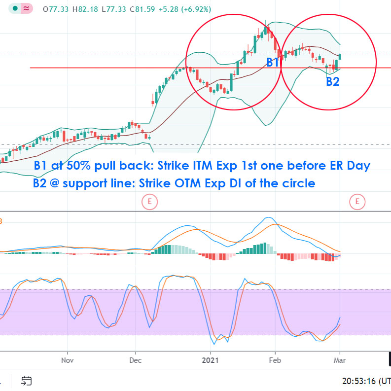
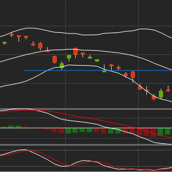

My Trading Bible
The three trading strategies that will make you rich!
Trending Growth Stock (1yr)
Find hot trending stocks via news, social media and
grow stock scanner
Price just touch upper bollinger band in 5 yrs chart
Price is at 50% pull back in 1 yr chart
Book value increased past quarters using
gross profit
calculator
Hold until profit at least 100%. Target price is 2x previous lowest low
Value Stock (5yrs)
Find value stock using
value scanner
Price is at 50% pull back in 5 yrs chart
Stochastic is under 20 for sometime in 5 yrs chart
Book value increased past years using
gross profit
calculator
Hold forever or until you need cash for other opportunities
Most Traded Stock (2wks)
Find most traded stock using
most traded scanner
Price pulls back at least 50% pull back in 1yr chart
Sales Q/Q & EPS Q/Q are at least 30%
Stochastic is under 20 for sometime in 1 yrs chart
Book value increased past quarters using
gross profit
calculator
Hold until profit 100%. Target price is 2x previous lowest low
Earning Scanner (2-4wks)

Obtain earning scanner list via premium subscription
Previously trending
Price is at 50% pull back in 1 yr chart
Book value increased past quarters using
gross profit
calculator
Open first position at B1. Add second position at B2. Best time to buy is around 10:15 daily
Choose ITM option with expiration day before earning
Choose OTM option with expiration day one month away
Hold until profit at least 100%. Target price is 2x previous lowest low
Trend Continuous Trade (3days)

Subscribe to receive daily trend continuous list.
Price crosses support or resistant in 1 yr chart
Price touches upper or lower band in 5 yr chart
Book value increased past quarter using
gross profit
calculator
Open at pull back around 11:30am on 2nd day
Close at 100% profit or around 2:00pm on 3rd day
MACD Cross New Trend (2-4wks)
If 1st MACD crosses after a long up or down trend: Open 2nd day, close 3rd day.
If 2st MACD crosses after a short pull back: Open and hold for 2-4 weeks
Book value increased past quarters using
gross profit
calculator
Hold until profit 100%. Target price is 2x previous lowest low